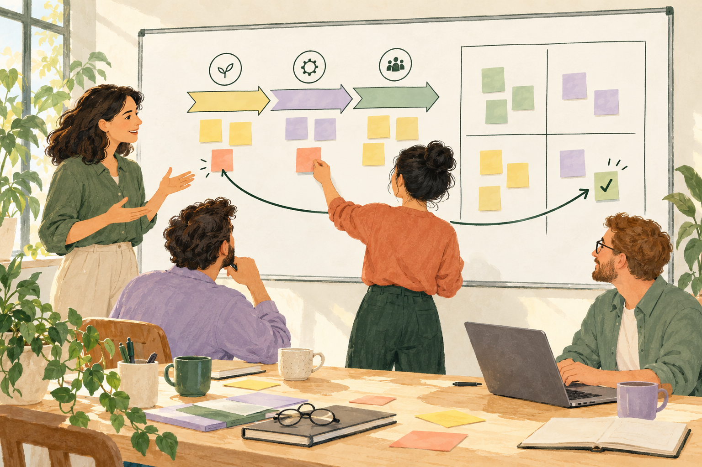
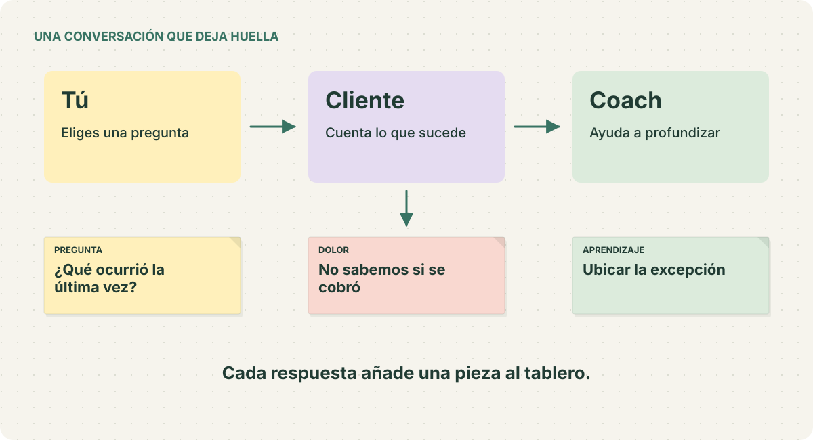
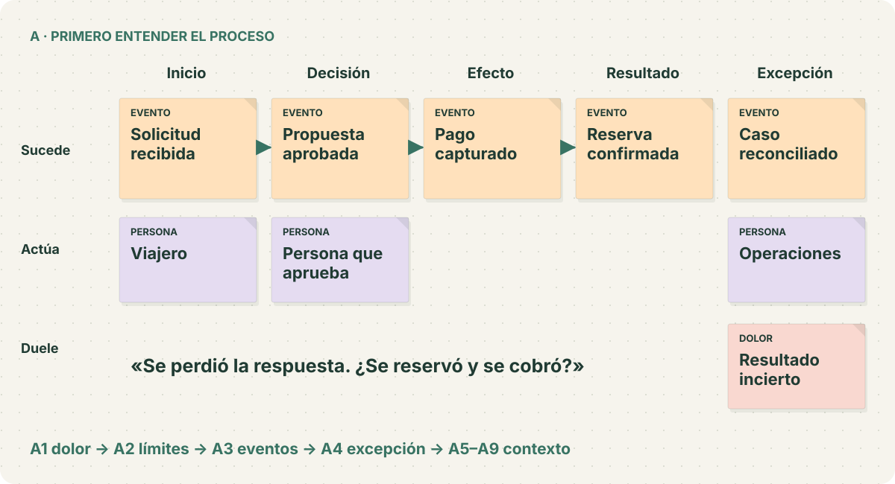
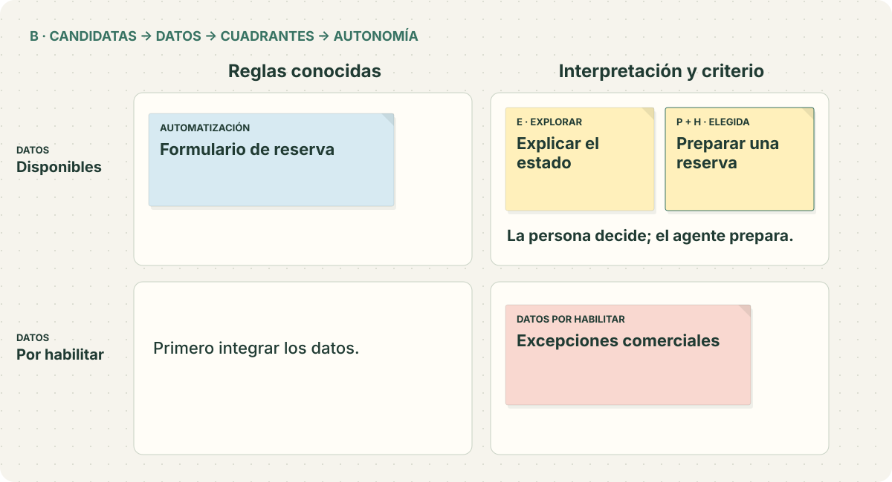
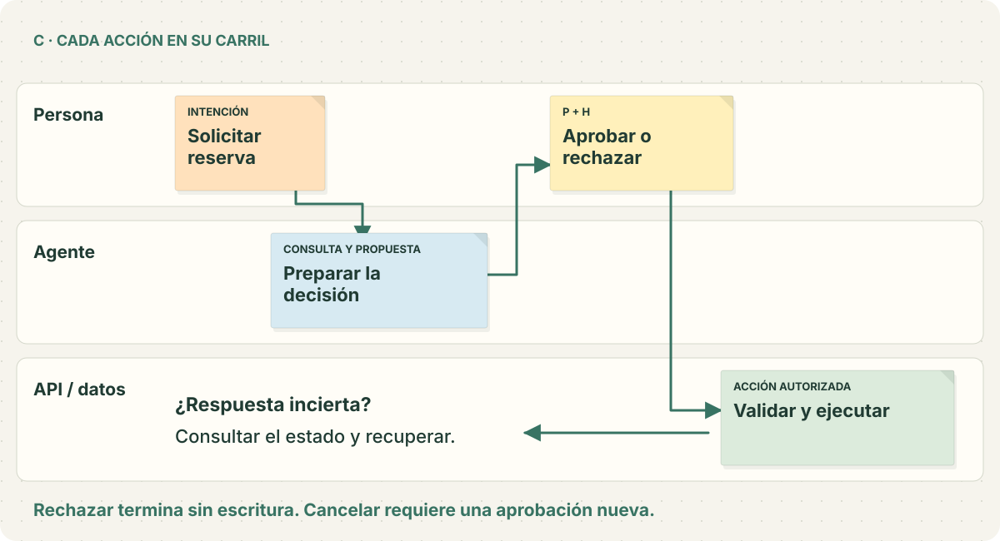
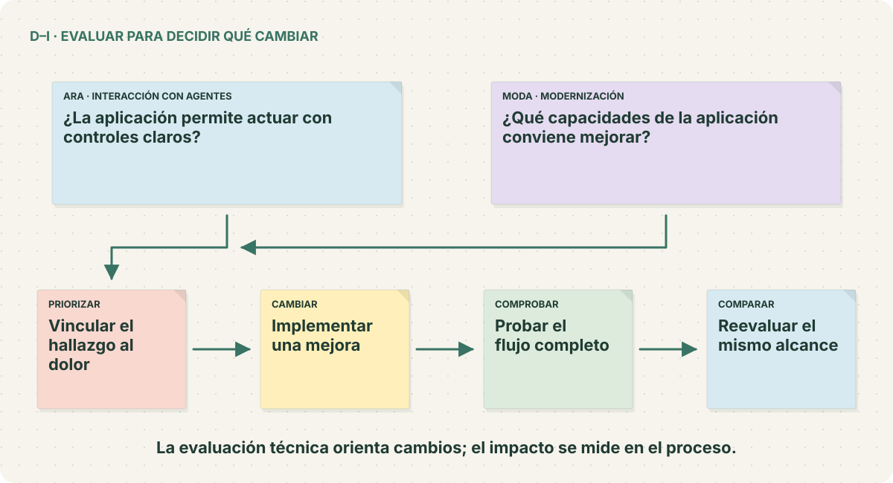
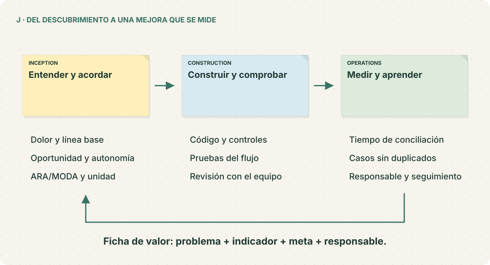

UN WORKSHOP ABIERTO · EN ESPAÑOL
Primero el dolor.
Después, el agente.
Escucha al cliente, entiende su proceso y descubre dónde una mejora puede aportar valor.
Una conversación guiada, tres tableros de post-it y un caso de reservas que podrás ejecutar y adaptar.
Empezar la práctica →Discovery → ARA/MODA → AI-DLC

EL MÉTODO · APRENDER HACIENDO
Una pregunta abre el camino.
Eliges qué preguntar. El cliente responde. El coach te ayuda a profundizar. El aprendizaje se convierte en una nota.

TABLERO A · ENTENDER EL PROCESO
¿En qué momento empieza el problema?
Ordena lo que sucede. Coloca personas, datos, reglas y dolores bajo el paso al que pertenecen.

TABLERO B · ELEGIR CON CRITERIO
Ubica la oportunidad. Acuerda su autonomía.
Compara las candidatas por los datos que tienen y el criterio que necesitan. Después define quién decide y quién actúa.

TABLERO C · DISEÑAR LA INTERACCIÓN
El agente propone. La persona decide.
Conecta intención, información, propuesta, aprobación y ejecución. Diseña también qué sucede si se pierde una respuesta.

D–I · ARA / MODA
Del hallazgo a una mejora comprobable.
Usa el proceso y el flujo como contexto para evaluar la aplicación. Prioriza una mejora, implementa, prueba y compara.

J · LLEVARLO AL EQUIPO
La mejora continúa después del código.
Conecta el trabajo con AI-DLC: acuerda el valor, construye una unidad y observa el resultado del proceso.

TU TURNO · DESDE ESTE NAVEGADOR
Empieza con una reunión.
Abre, pregunta y construye el tablero.
21 situaciones con cliente y coach. Tu avance se guarda en este navegador; puedes descargarlo y retomarlo en otro equipo.
Empezar la práctica →Sin instalar Python, clonar el repo ni configurar una cuenta AWS.